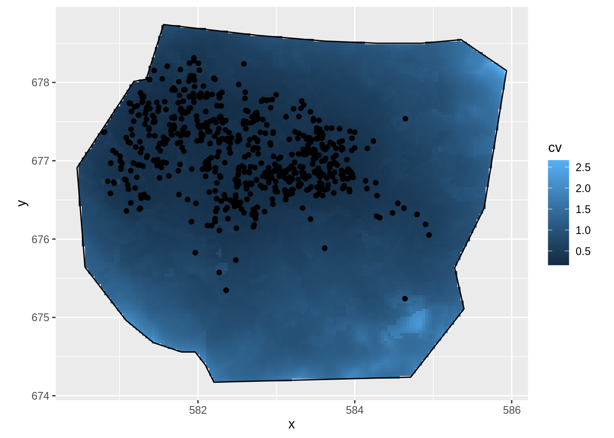
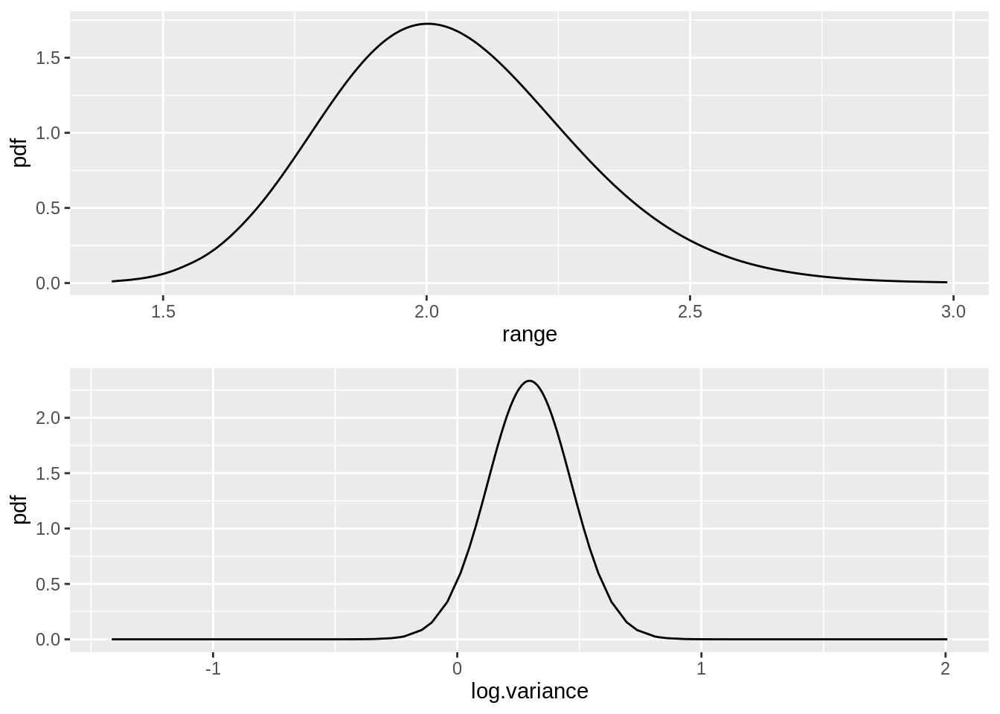
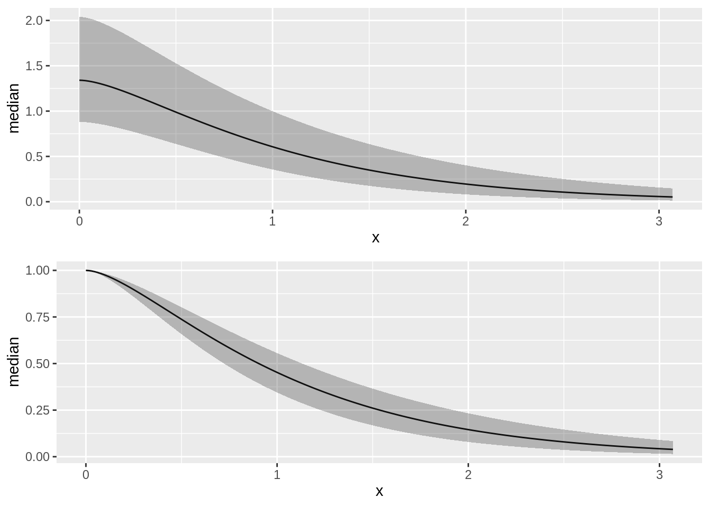
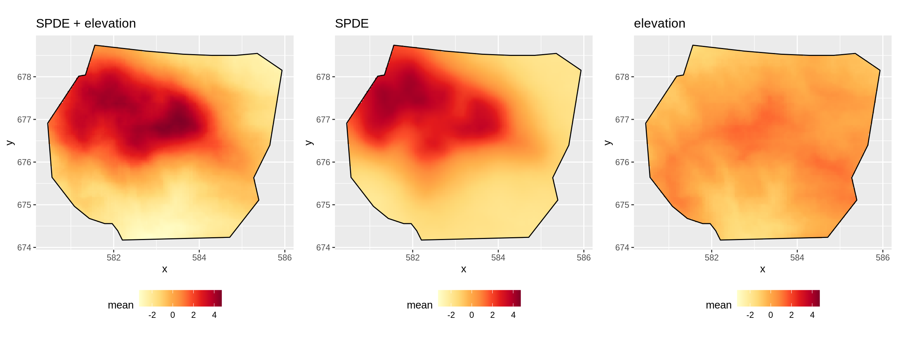
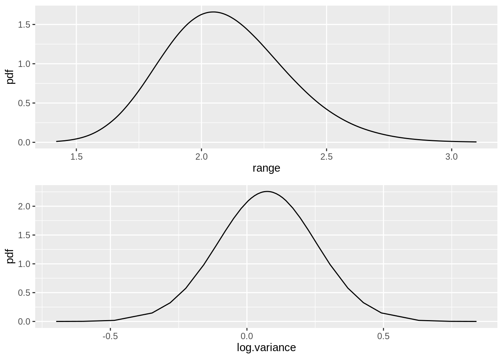
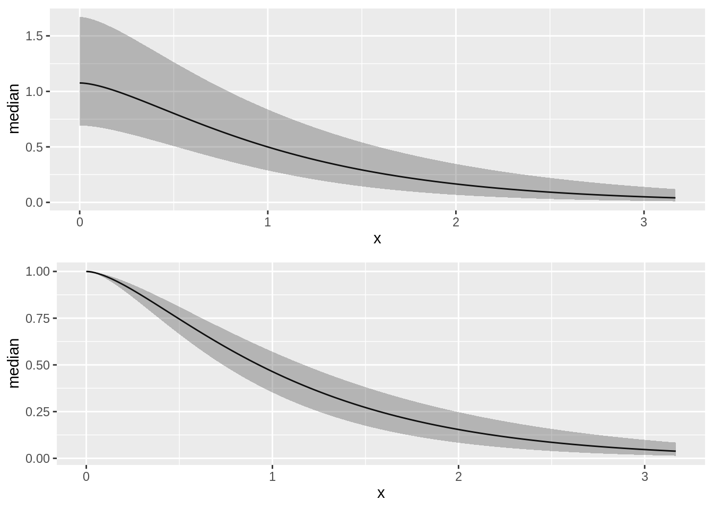
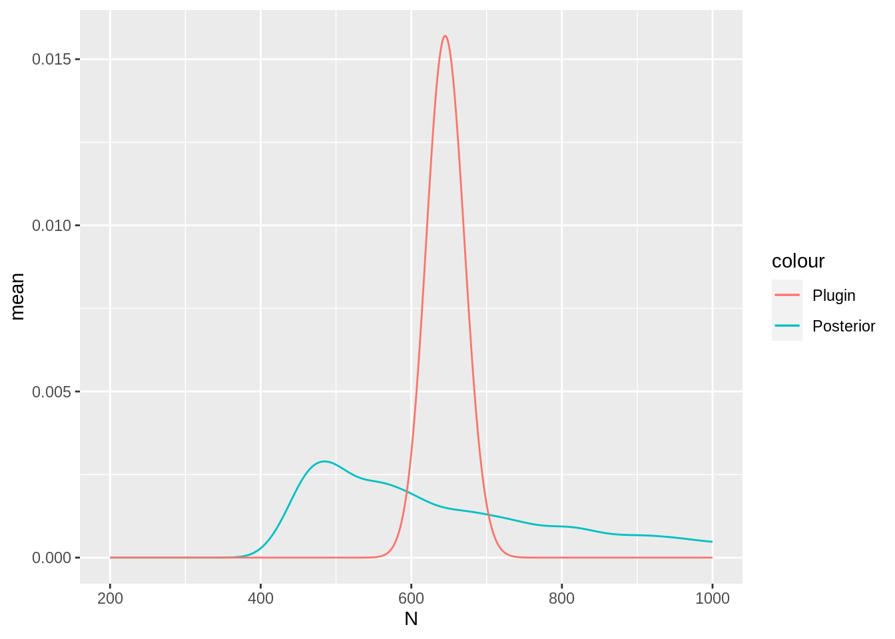

LGCPs - Spatial covariates
David Borchers
2021-10-12
Source:vignettes/web/2d_lgcp_covars.Rmd
2d_lgcp_covars.RmdSet things up
library(INLA)
library(inlabru)
library(RColorBrewer)
library(ggplot2)
bru_options_set(inla.mode = "experimental")Introduction
We are going to fit spatial models to the gorilla data, using factor and continuous explanatory variables in this practical. We will fit one using the factor variable vegetation, the other using the continuous covariate elevation
(Jump to the bottom of the practical if you want to start gently with a 1D example!)
Get the data
data(gorillas, package = "inlabru")This dataset is a list (see help(gorillas) for details. Extract the objects you need from the list, for convenience:
nests <- gorillas$nests
mesh <- gorillas$mesh
boundary <- gorillas$boundary
gcov <- gorillas$gcovFactor covariates
Look at the vegetation type, nests and boundary:
ggplot() +
gg(gcov$vegetation) +
gg(boundary) +
gg(nests, color = "white", cex = 0.5) +
coord_equal()
Or, with the mesh:
ggplot() +
gg(gcov$vegetation) +
gg(mesh) +
gg(boundary) +
gg(nests, color = "white", cex = 0.5) +
coord_equal()
A model with vegetation type only
It seems that vegetation type might be a good predictor because nearly all the nests fall in vegetation type Primary. So we construct a model with vegetation type as a fixed effect. To do this, we need to tell ‘lgcp’ how to find the vegetation type at any point in space, and we do this by creating model components with a fixed effect that we call vegetation (we could call it anything), as follows:
comp1 <- coordinates ~ vegetation(gcov$vegetation, model = "factor_full") - 1Notes: * We need to tell ‘lgcp’ that this is a factor fixed effect, which we do with model="factor_full", giving one coefficient for each factor level. * We need to be careful about overparameterisation when using factors. Unlike regression models like ‘lm()’, ‘glm()’ or ‘gam()’, ‘lgcp()’, inlabru does not automatically remove the first level and absorb it into an intercept. Instead, we can either use model="factor_full" without an intercept, or model="factor_contrast", which does remove the first level.
comp1alt <- coordinates ~ vegetation(gcov$vegetation, model = "factor_contrast") + Intercept(1)Fit the model as usual:
Predict the intensity, and plot the median intensity surface. (In older versions, predicting takes some time because we did not have vegetation values outside the mesh so ‘inlabru’ needed to predict these first. Since v2.0.0, the vegetation has been pre-extended.)
The predidct function of inlabru takes into its data argument a SpatialPointsDataFrame, a SpatialPixelsDataFrame or a data.frame. We can use the inlabru function pixels to generate a SpatialPixelsDataFrame only within the boundary, using its mask argument, as shown below.
df <- pixels(mesh, mask = boundary)
int1 <- predict(fit1, data = df, ~ exp(vegetation))
ggplot() +
gg(int1) +
gg(boundary, alpha = 0, lwd = 2) +
gg(nests, color = "DarkGreen") +
coord_equal()
Not surprisingly, given that most nests are in Primary vegetation, the high density is in this vegetation. But there are substantial patches of predicted high density that have no nests, and some areas of predicted low density that have nests. What about the estimated abundance (there are really 647 nests there):
A model with vegetation type and a SPDE type smoother
Lets try to explain the pattern in nest distribution that is not captured by the vegetation covariate, using an SPDE:
pcmatern <- inla.spde2.pcmatern(mesh,
prior.sigma = c(0.1, 0.01),
prior.range = c(5, 0.01)
)
comp2 <- coordinates ~
-1 +
vegetation(gcov$vegetation, model = "factor_full") +
mySmooth(coordinates, model = pcmatern)And plot the median intensity surface
df <- pixels(mesh, mask = boundary)
int2 <- predict(fit2, df, ~ exp(mySmooth + vegetation), n.samples = 1000)
ggplot() +
gg(int2, aes(fill = q0.025)) +
gg(boundary, alpha = 0, lwd = 2) +
gg(nests) +
coord_equal()
… and the expected integrated intensity (mean of abundance)
Lambda2 <- predict(
fit2,
ipoints(boundary, mesh),
~ sum(weight * exp(mySmooth + vegetation))
)
Lambda2
#> mean sd q0.025 median q0.975 smin smax cv
#> 1 681.5145 28.43875 627.2521 681.2297 733.0293 607.0998 766.6889 0.04172875
#> var
#> 1 808.7627Look at the contributions to the linear predictor from the SPDE and from vegetation:
lp2 <- predict(fit2, df, ~ list(
smooth_veg = mySmooth + vegetation,
smooth = mySmooth,
veg = vegetation
))The function scale_fill_gradientn sets the scale for the plot legend. Here we set it to span the range of the three linear predictor components being plotted (medians are plotted by default).
lprange <- range(lp2$smooth_veg$median, lp2$smooth$median, lp2$veg$median)
csc <- scale_fill_gradientn(colours = brewer.pal(9, "YlOrRd"), limits = lprange)
plot.lp2 <- ggplot() +
gg(lp2$smooth_veg) +
csc +
theme(legend.position = "bottom") +
gg(boundary, alpha = 0) +
ggtitle("mySmooth + vegetation") +
coord_equal()
plot.lp2.spde <- ggplot() +
gg(lp2$smooth) +
csc +
theme(legend.position = "bottom") +
gg(boundary, alpha = 0) +
ggtitle("mySmooth") +
coord_equal()
plot.lp2.veg <- ggplot() +
gg(lp2$veg) +
csc +
theme(legend.position = "bottom") +
gg(boundary, alpha = 0) +
ggtitle("vegetation") +
coord_equal()
multiplot(plot.lp2, plot.lp2.spde, plot.lp2.veg, cols = 3)
A model with SPDE only
Do we need vegetation at all? Fit a model with only an SPDE + Intercept, and choose between models on the basis of DIC, using ‘deltaIC()’.
comp3 <- coordinates ~ mySmooth(coordinates, model = pcmatern) + Intercept(1)
fit3 <- lgcp(comp3,
data = nests,
samplers = boundary,
domain = list(coordinates = mesh)
)
int3 <- predict(fit3, df, ~ exp(mySmooth + Intercept))
ggplot() +
gg(int3) +
gg(boundary, alpha = 0) +
gg(nests) +
coord_equal()
Lambda3 <- predict(
fit3,
ipoints(boundary, mesh),
~ sum(weight * exp(mySmooth + Intercept))
)
Lambda3
#> mean sd q0.025 median q0.975 smin smax cv
#> 1 673.9218 26.52128 628.6225 671.8534 724.3516 618.2656 733.1697 0.03935365
#> var
#> 1 703.3785
deltaIC(fit1, fit2, fit3)
#> Model DIC Delta.DIC
#> 1 fit2 -4827.688 0.00000
#> 2 fit3 -4776.167 51.52029
#> 3 fit1 -3926.487 901.20072CV and SPDE parameters for Model 2
We are going with Model fit2. Lets look at the spatial distribution of the coefficient of variation
ggplot() +
gg(int2["cv"]) +
gg(boundary, alpha = 0) +
gg(nests) +
coord_fixed()
Plot the vegetation “fixed effect” posteriors. First get their names - from $marginals.random$vegetation of the fitted object, which contains the fixed effect marginal distribution data
flist <- vector("list", NROW(fit2$summary.random$vegetation))
for (i in seq_along(flist)) flist[[i]] <- plot(fit2, "vegetation", index = i)
multiplot(plotlist = flist, cols = 3)
Use spde.posterior( ) to obtain and then plot the SPDE parameter posteriors and the Matern correlation and covariance functions for this model.
spde.range <- spde.posterior(fit2, "mySmooth", what = "range")
spde.logvar <- spde.posterior(fit2, "mySmooth", what = "log.variance")
range.plot <- plot(spde.range)
var.plot <- plot(spde.logvar)
multiplot(range.plot, var.plot)
corplot <- plot(spde.posterior(fit2, "mySmooth", what = "matern.correlation"))
covplot <- plot(spde.posterior(fit2, "mySmooth", what = "matern.covariance"))
multiplot(covplot, corplot)
Continuous covariates
Now lets try a model with elevation as a (continuous) explanatory variable. (First centre elevations for more stable fitting.)
elev <- gcov$elevation
elev$elevation <- elev$elevation - mean(elev$elevation, na.rm = TRUE)
ggplot() +
gg(elev) +
gg(boundary, alpha = 0) +
coord_fixed()
The elevation variable here is of class ‘SpatialGridDataFrame’, that can be handled in the same way as the vegetation covariate. However, since in some cases data may be stored differently, and other methods are needed to access the stored values. In such cases, we can define a function that knows how to evaluate the covariate at arbitrary points in the survey region, and call that function in the component definition. In this case, we can use a powerful method from the ‘sp’ package to do this. We use this to create the needed function.
f.elev <- function(x, y) {
# turn coordinates into SpatialPoints object:
# with the appropriate coordinate reference system (CRS)
spp <- SpatialPoints(data.frame(x = x, y = y), proj4string = fm_sp_get_crs(elev))
proj4string(spp) <- fm_sp_get_crs(elev)
# Extract elevation values at spp coords, from our elev SpatialGridDataFrame
v <- over(spp, elev)
if (any(is.na(v$elevation))) {
v$elevation <- inlabru:::bru_fill_missing(elev, spp, v$elevation)
}
return(v$elevation)
}For brevity we are not going to consider models with elevation only, with elevation and a SPDE, and with SPDE only. We will just fit one with elevation and SPDE. We create our model to pass to lgcp thus:
matern <- inla.spde2.pcmatern(mesh,
prior.sigma = c(0.1, 0.01),
prior.range = c(5, 0.01)
)
ecomp <- coordinates ~ elev(f.elev(x, y), model = "linear") +
mySmooth(coordinates, model = matern) + Intercept(1)Note how the elevation effect is defined. When we used the Spatial grid object directly we specified it like
vegetation(gcov$vegetation, model = "factor_full")whereas with the function method we specify the covariate like this:
elev(f.elev(x, y), model = "linear")We also now include an intercept term.
The model is fitted in the usual way:
Summary and model selection
summary(efit)
#> inlabru version: 2.3.1.9000
#> INLA version: 21.10.03
#> Components:
#> elev: Model types main='linear', group='exchangeable', replicate='iid'
#> mySmooth: Model types main='spde', group='exchangeable', replicate='iid'
#> Intercept: Model types main='linear', group='exchangeable', replicate='iid'
#> Likelihoods:
#> Family: 'cp'
#> Data class: 'SpatialPointsDataFrame'
#> Predictor: coordinates ~ .
#> Time used:
#> Pre = 1.02, Running = 40.1, Post = 0.117, Total = 41.3
#> Fixed effects:
#> mean sd 0.025quant 0.5quant 0.975quant mode kld
#> elev 0.004 0.001 0.002 0.004 0.006 0.004 0
#> Intercept 1.051 0.571 -0.116 1.064 2.145 1.089 0
#>
#> Random effects:
#> Name Model
#> mySmooth SPDE2 model
#>
#> Model hyperparameters:
#> mean sd 0.025quant 0.5quant 0.975quant mode
#> Range for mySmooth 2.10 0.246 1.662 2.08 2.63 2.04
#> Stdev for mySmooth 1.04 0.092 0.873 1.04 1.24 1.03
#>
#> Deviance Information Criterion (DIC) ...............: -4778.29
#> Deviance Information Criterion (DIC, saturated) ....: -21555.33
#> Effective number of parameters .....................: 60.03
#>
#> Watanabe-Akaike information criterion (WAIC) ...: -4640.97
#> Effective number of parameters .................: 172.29
#>
#> Marginal log-Likelihood: 2281.51
#> Posterior summaries for the linear predictor and the fitted values are computed
#> (Posterior marginals needs also 'control.compute=list(return.marginals.predictor=TRUE)')
deltaIC(fit1, fit2, fit3, efit)
#> Model DIC Delta.DIC
#> 1 fit2 -4827.688 0.00000
#> 2 efit -4778.287 49.40091
#> 3 fit3 -4776.167 51.52029
#> 4 fit1 -3926.487 901.20072Predict and plot the density
e.int <- predict(efit, pixels(mesh, mask = boundary), ~ exp(mySmooth + elev + Intercept))
ggplot() +
gg(e.int) +
gg(boundary, alpha = 0) +
gg(nests, shape = "+") +
coord_equal()Now look at the elevation and SPDE effects in space. Leave out the Intercept because it swamps the spatial effects of elevation and the SPDE in the plots and we are interested in comparing the effects of elevation and the SPDE.
First we need to predict on the linear predictor scale.
e.lp <- predict(
efit, pixels(mesh, mask = boundary),
~ list(
smooth_elev = mySmooth + elev,
elev = elev,
smooth = mySmooth
)
)The code below, which is very similar to that used for the vegetation factor variable, produces the plots we want.
lprange <- range(e.lp$smooth_elev$mean, e.lp$elev$mean, e.lp$smooth$mean)
library(RColorBrewer)
csc <- scale_fill_gradientn(colours = brewer.pal(9, "YlOrRd"), limits = lprange)
plot.e.lp <- ggplot() +
gg(e.lp$smooth_elev, mask = boundary) +
csc +
theme(legend.position = "bottom") +
gg(boundary, alpha = 0) +
ggtitle("SPDE + elevation") +
coord_equal()
plot.e.lp.spde <- ggplot() +
gg(e.lp$smooth, mask = boundary) +
csc +
theme(legend.position = "bottom") +
gg(boundary, alpha = 0) +
ggtitle("SPDE") +
coord_equal()
plot.e.lp.elev <- ggplot() +
gg(e.lp$elev, mask = boundary) +
csc +
theme(legend.position = "bottom") +
gg(boundary, alpha = 0) +
ggtitle("elevation") +
coord_equal()
multiplot(plot.e.lp,
plot.e.lp.spde,
plot.e.lp.elev,
cols = 3
)
You might also want to look at the posteriors of the fixed effects and of the SPDE. Adapt the code used for the vegetation factor to do this.
flist <- vector("list", NROW(efit$summary.fixed))
for (i in seq_along(flist)) {
flist[[i]] <- plot(efit, rownames(efit$summary.fixed)[i])
}
multiplot(plotlist = flist, cols = 2)
Plot the SPDE parameter posteriors and the Matern correlation and covariance functions for this model.
spde.range <- spde.posterior(efit, "mySmooth", what = "range")
spde.logvar <- spde.posterior(efit, "mySmooth", what = "log.variance")
range.plot <- plot(spde.range)
var.plot <- plot(spde.logvar)
multiplot(range.plot, var.plot)
corplot <- plot(spde.posterior(efit, "mySmooth", what = "matern.correlation"))
covplot <- plot(spde.posterior(efit, "mySmooth", what = "matern.covariance"))
multiplot(covplot, corplot)
Also estimate abundance. The data.frame in the second call leads to inclusion of N in the prediction object, for easier plotting.
Lambda <- predict(
efit, ipoints(boundary, mesh),
~ sum(weight * exp(mySmooth + elev + Intercept))
)
Lambda
#> mean sd q0.025 median q0.975 smin smax cv
#> 1 678.0358 29.43523 614.827 676.2022 737.2982 609.1836 749.5777 0.04341251
#> var
#> 1 866.433
Nest.e <- predict(
efit,
ipoints(boundary, mesh),
~ data.frame(
N = 200:1000,
density = dpois(200:1000,
lambda = sum(weight * exp(mySmooth + elev + Intercept))
)
),
n.samples = 2000
)Plot in the same way as in previous practicals
Nest.e$plugin_estimate <- dpois(Nest.e$N, lambda = Lambda$median)
ggplot(data = Nest.e) +
geom_line(aes(x = N, y = mean, colour = "Posterior")) +
geom_line(aes(x = N, y = plugin_estimate, colour = "Plugin"))
Non-spatial evaluation of the covariate effect
The previous examples of posterior prediction focused on spatial prediction. From inlabru version 2.2.8, a feauture is available for overriding the component input value specification from the component definition. Each model component can be evaluated directly, for arbitrary values by functions named by adding the suffix _eval to the end of the component name in the predictor expression. Since the elevation effect in this model is linear, the resulting plot isn’t very interesting, but the same method can be applied to non-linear effects as well, and combined into general R expressions:
elev.pred <- predict(
efit,
data = data.frame(elevation = seq(0, 100, length.out = 1000)),
formula = ~ elev_eval(elevation)
)
ggplot(elev.pred) +
geom_line(aes(elevation, mean)) +
geom_ribbon(aes(elevation,
ymin = q0.025,
ymax = q0.975),
alpha = 0.2) +
geom_ribbon(aes(elevation,
ymin = mean - 1 * sd,
ymax = mean + 1 * sd),
alpha = 0.2)
A 1D Example
Try fitting a 1-dimensional model to the point data in the inlabru dataset Poisson2_1D. This comes with a covariate function called cov2_1D. Try to reproduce the plot below (used in lectures) showing the effects of the Intercept + z and the SPDE. (You may find it helpful to build on the model you fitted in the previous practical, adding the covariate to the model specification.)
data(Poisson2_1D)
ss <- seq(0, 55, length = 200)
z <- cov2_1D(ss)
x <- seq(1, 55, length = 100)
mesh <- inla.mesh.1d(x, degree = 1)
comp <- x ~
beta_z(cov2_1D(x), model = "linear") +
spde1D(x, model = inla.spde2.matern(mesh)) +
Intercept(1)
fitcov1D <- lgcp(comp, pts2, domain = list(x = mesh))
pr.df <- data.frame(x = x)
prcov1D <- predict(
fitcov1D, pr.df,
~ list(
total = exp(beta_z + spde1D + Intercept),
fx = exp(beta_z + Intercept),
spde = exp(spde1D)
)
)
ggplot() +
gg(prcov1D$total, color = "red") +
geom_line(aes(x = prcov1D$spde$x, y = prcov1D$spde$median), col = "blue", lwd = 1.25) +
geom_line(aes(x = prcov1D$fx$x, y = prcov1D$fx$median), col = "green", lwd = 1.25) +
geom_point(data = pts2, aes(x = x), y = 0.2, shape = "|", cex = 4) +
xlab(expression(bold(s))) +
ylab(expression(hat(lambda)(bold(s)) ~ ~"and its components")) +
annotate(geom = "text", x = 40, y = 6, label = "Intensity", color = "red") +
annotate(geom = "text", x = 40, y = 5.5, label = "z-effect", color = "green") +
annotate(geom = "text", x = 40, y = 5, label = "SPDE", color = "blue")